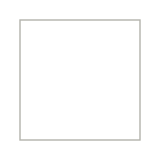
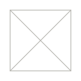
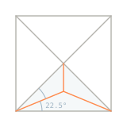
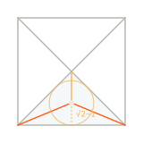
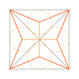
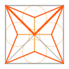
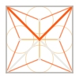
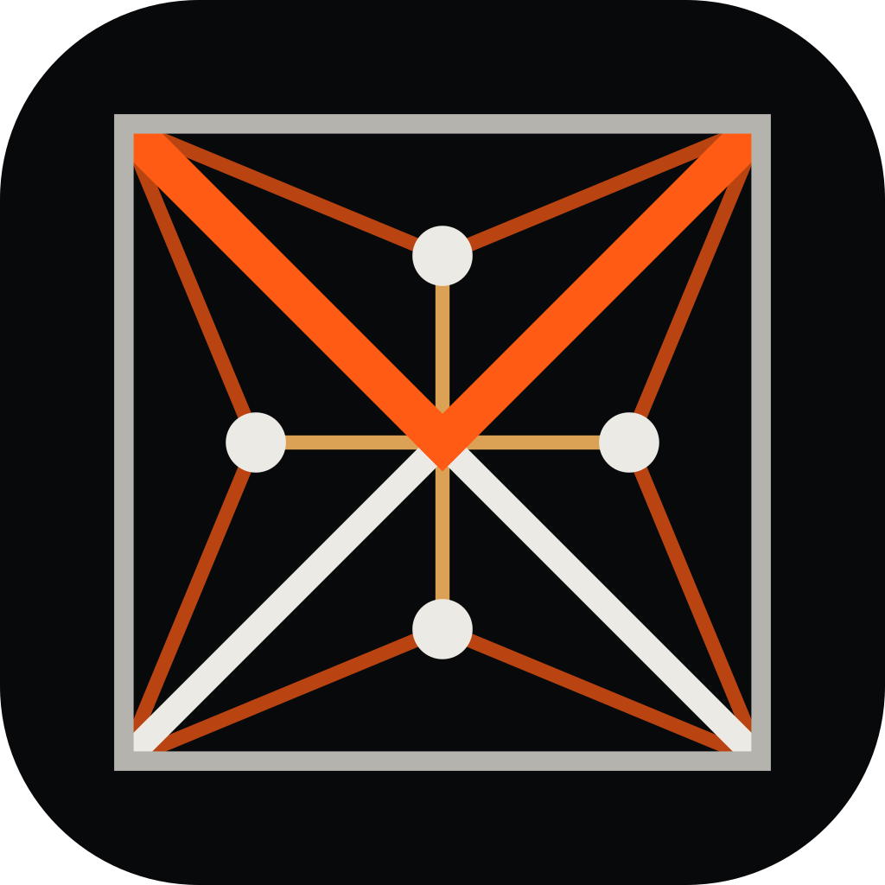
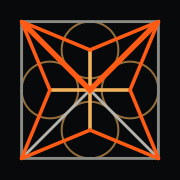

An egg made of one drawing.
Exo is a harness that keeps changing: it learns, grows and adds parts. Its mark is a square with an X and a dot in each triangle, the same distance from every side. The top of the X is orange, so it also reads as a V. Repeat the drawing and you get a lattice. Repeat it in more dimensions and the lattice keeps growing. The egg is that lattice, alive.
01 / The drawing
A square, its X, and four dots.
Draw a square and both diagonals. The diagonals are an X, and they cut the square into four triangles. In each triangle, mark the one point that is the same distance from all three sides: its incentre. In a square of side 2 it sits √2 − 1 above the side, which is tan 22.5°. Join each dot to the corners of its triangle. Those three lines are where a fire lit on all three sides at once would meet.
Tile the drawing and the dots of four neighbouring squares make a regular octagon: the 4.8.8 tiling. Lift it to a cube and the six dots make the truncated cubic honeycomb, with every edge the same length. The same rule works in every dimension: an n-dimensional cube has 2n dots, each touching 2n − 1 others. The mark, the wordmark and the egg all come from this one figure.





02 / The X/V rule
Exo, and also evo.
The x in exo is the drawing's X. Its top half is the brand orange, so the word also reads as evo: a harness, an ecosystem, always evolving. The rule is short so it holds at every size.
- The x is two strokes at exactly 45°, the square's diagonals. Nothing else in the mark is diagonal at another angle, except the thin incentre lines at 22.5° and 67.5°.
- The V is the two upper arms, and it owns the crossing: the lower legs stop at the V's lower edges. On dark the legs are fg
#eceae4; on light they are#08090a. - The V is always
#ff5b14and nothing else in the wordmark is orange. In the mark, only the V and the top dot (the seed) are orange. - The e and the o are cut from regular octagons, the octagon the dots make. The side of a regular octagon of height h is h(√2 − 1): the incentre number again.
- Never outline, stretch, rotate or recolour the V. In one-colour print, the V is solid and the legs are a 40% tint.
03 / Wordmark
Four variants, one pick.
Each is shown at display size, on light, and at its real size of 32 and 16 pixels tall. The x-height is 20 units with a 4-unit stroke, so at 16 px the stroke is 3.2 px and the V still reads.
A · Facet
Octagonal e and o, the octagon of the lattice. Every edge is at 0°, 45° or 90°, so it stays sharp on a pixel grid and matches the X. The e's terminal is cut at 45°, square to its stroke.
B · Round
Circular e and o, the incircles. Softer and more familiar; the circles sit less well beside the sharp X, and at 16 px the round counters blur first.
C · Seed
Facet, with the incentre of the V's triangle as an orange dot and a hairline between the V and the legs. Tells the whole story; for display sizes only (48 px and up).
D · Caps
Spaced capitals, matching the site's nav and the terminal's E X O brand bar. For labels and tight UI, not as the main mark.
Why A. It is the only variant where every letter comes from the drawing: the X from the diagonals, the e and o from the lattice's octagon. It has the fewest angles (three), so it renders crisply at 16 px, and it pairs with the mark without a second shape language. C is its display form; D is its label form.
04 / Mark and icons
The figure is the mark.
The mark is the drawing itself: the square, the X with its V, the four dots and their lines. The top dot sits inside the V, at the incentre of the V's triangle; it is the seed that the egg grows from. Below 32 px the lines and dots drop out and only the X with its V remains.

Mark. mark.svg, mark-light.svg

Construction. With incircles; for explaining, not as a logo.


App icon. app-icon.svg (square, platforms round it), app-icon-1024.png, icon-512, icon-192, apple-touch-icon.
Favicons. favicon.svg and favicon-32 keep the square and dots; favicon-16 is the X alone (shown at 4× on the right).
05 / The living egg
A pulsing matrix of information.
The site's orb, rebuilt from the lattice. Each cell is one cube of the honeycomb, with its six incentre dots. Information moves as packets along the edges; a cell lights when one passes through it, and its lines to the centre glow. A heartbeat in the core sends packets out; more activity means a faster beat and more traffic. The stage adds cells, structure, a dimension and brightness. Fractional stages blend, so an evolution can be animated.
0 · Egg. One cell, the yolk: six dots, an octahedron, the top dot orange. A closed shell made of the same honeycomb, one ring out.
1 · Hatchling. The six face cells join; every new link is one edge of length 2(√2 − 1). The shell cracks and falls away.
2 · Lattice. Nineteen cells: the honeycomb as an orb. The first cube appears, with the drawing's lines inside it.
3 · Hyper. The fourth dimension unfolds out of the third: 33 cells of 8 dots, turning through the fourth axis. The new links are steel blue.
| Stage | Name | Dimension | Cells | Dots | Shell | Brightness |
|---|---|---|---|---|---|---|
| 0 | egg | 3 | 1 | 6 | closed | 0.62 |
| 1 | hatchling | 3 | 7 | 42 | cracking | 0.74 |
| 2 | lattice | 3 | 19 | 114 | gone | 0.86 |
| 3 | hyper | 4 | 33 | 264 | gone | 1 |
| 4 | spare | 5 | 51 | 510 | gone | 1 |
<script src="/brand/egg.js"></script>
var egg = ExoEgg.mount(canvas, { stage: 0, activity: 0.5 });
egg.setStage(1.5); // 0..4, eases there; { immediate: true } jumps
egg.setActivity(0.8); // 0..1: heartbeat rate and traffic
egg.pulse(6); // send 6 packets out of the core, e.g. when a turn starts
egg.getStage(); egg.pause(); egg.resume(); egg.destroy();
// or with no script of your own:
<canvas data-exo-egg data-stage="2" data-activity="0.6"></canvas>
Canvas 2D, no libraries, one 24 KB file (unminified). Under prefers-reduced-motion it draws one still frame with a lit path and never animates. It pauses off screen and in background tabs. The full API is in docs/BRAND.md.
06 / Colour
The site's palette, unchanged.
Orange is the signal: the V, the seed, information in motion. Steel blue is system knowledge, and in the egg it marks the dimension that was added. Everything else is structure.
07 / Terminal (proposal)
The mark in braille.
A text-mode rendering for the terminal client's header, in braille cells like the current start motif (exo_tui/hero.py). Orange cells hold the V or the seed. Proposal only; the terminal client is unchanged.
⢰⢶⢖⣒⠒⠒⠒⠒⢒⣒⢶⢶ ⢸ ⠑⢌⠉⠒⠖⠊⢉⠔⠁⢸ ⢸ ⠑⢄⢀⠔⠁ ⢸ ⢸ ⠈⠁⢀⠔⠑⢄ ⠉ ⢸ ⢸ ⢀⠔⠁ ⡄ ⠑⢄ ⢸ ⢸⣔⣁⣀⣀⣀⣀⣀⣀⣀⣑⣼
Mark, 12 × 6 cells. site/brand/tui-mark.txt
⡠⠤⠤⠤⣀ ⡰⠋ ⠈⠓⡀ ⡸ ⣠⢦⡀ ⠹ ⡅ ⠘⢿⡞⣋⣿⣄ ⡇ ⠇ ⠈⠻⡽⠊⠉ ⠇ ⠹⡄ ⡼⠁ ⠈⠓⠆⠤⠤⠄⠖⠋
Egg, stage 0, 14 × 7 cells: the yolk inside its shell. site/brand/tui-egg.txt
08 / Credit
Where the figure comes from.
The drawing is a lattice figure. Its geometry is studied in the open research project Incentre lattice (aska-digital/incentre-lattice), which this design follows for every number: the incentre height √2 − 1, the 4.8.8 tiling, the truncated cubic honeycomb and its n-dimensional form. The mark borrows the geometry, not that project's look: its colours and type stay its own.
The classical mathematics behind it is old and belongs to everyone: the incentre and the medial axis; the Wythoff construction (Wythoff, 1918) as developed by H. S. M. Coxeter; the uniform tilings and honeycombs.
The egg is a rework of the orb on the Exo front page, which was a shell of linked nodes around an orange core.